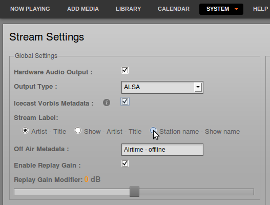
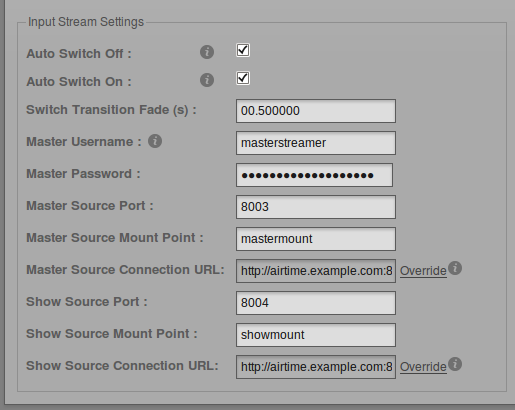
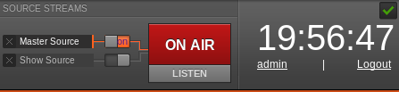
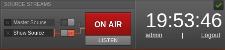
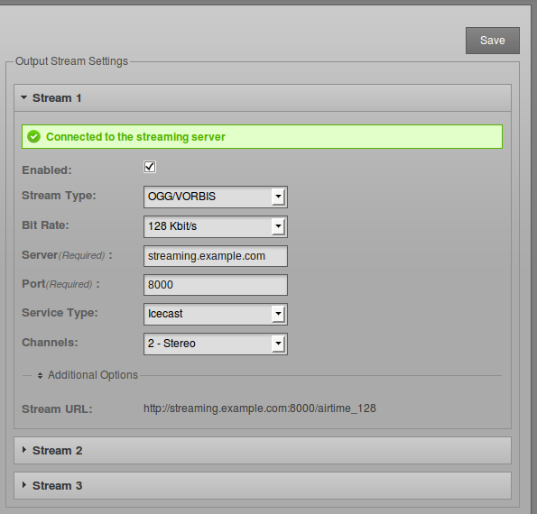
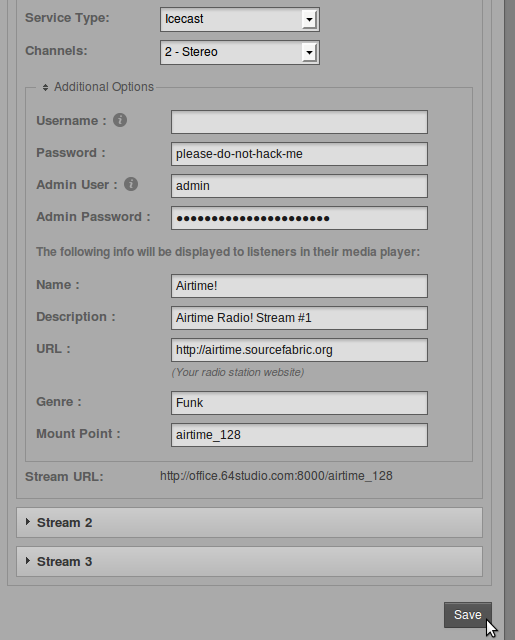
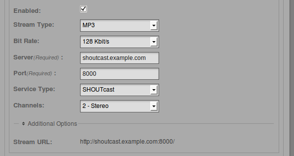
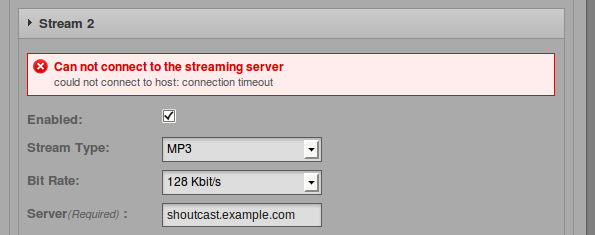

Note LibreTime installed via the install script does not currently change the default Icecast password and is insecure without intervention by the system admin. There is a tutorial on our wiki that walks you through the steps of how to fix this and an open issue #86 to track resolution of this.
Global settings
You can configure direct Icecast and SHOUTcast streams and sound card output by clicking Streams on the System menu.
At the top left of the Stream Settings page are global settings including Hardware Audio Output, which enables playout from the default sound card on the server, if one is fitted. The default Output Type of ALSA on the drop-down menu will be suitable for most servers with a sound card. If not, you have the option to choose from other Liquidsoap interfaces available, such as OSS or PortAudio.
The second checkbox under Global Settings enables the sending of Icecast Vorbis Metadata with direct streams. This setting is optional, because some media players have a bug which makes them disconnect from Ogg Vorbis streams when an Icecast server notifies the player that a new track is starting.
The Stream Label radio button allows you to set the metadata that will be sent with direct streams; Artist and Title, Show, Artist and Title, or Station name and Show name.

The Off Air Metadata field configures the text that will be sent to any configured streaming servers, and from there on to media players, when Airtime is not streaming any output.
Below this is the Enable Replay Gain checkbox which, if checked, automatically adjusts Airtime's output level to an average of -14dBFS, based on prior analysis of the level of individual files in the Library. This feature helps guard against unwanted changes in Airtime's output level caused by the typical variation in average level of recordings made in different studios at different times. The correction value for each file can be viewed by enabling the ReplayGain column in the Library.
If Replay Gain is enabled, output level can be adjusted up to 10dB louder or quieter from the reference level of -14dBFS by clicking and dragging the Replay Gain Modifier control. Increasing level too far is likely to result in clipping (distortion) since the output level is adjusted to be greater than that of the original files. This scenario is indicated by amplitude correction factors greater than 1.0 in the Liquidsoap log file.
Click the Save button on the right side of the page to save any changes that you have made to global settings. If you are only using the hardware audio output, and will not be streaming to or from Airtime, you can leave the Stream Settings page after clicking the Save button.
Input stream settings
On the lower left side of the Stream Settings page you can configure remote live input streams from DJ programs such as Mixxx or IDJC, or smartphone applications used by broadcast journalists. A bug with Butt versions 1.14 to 1.16 causes streams not to connect to LibreTime. A fix has been introduced with Butt version 1.17 that allows it to be used by LibreTime.
Airtime supports two types of live input stream; the Show Source, which enables a specific person to stream in during their own show, and the Master Source, which can override the Show Source if necessary. If neither type of live input is available, Airtime will fall back to Scheduled Play (playlists, smart blocks, remote streams and files scheduled in Airtime, in advance of or during a show).
The Auto Switch Off and Auto Switch On checkboxes enable playout to be switched automatically to the highest priority source whenever an authenticated input source disconnects from or connects to Airtime, respectively. The field Switch Transition Fade sets the length of the audio fade as scheduled playout is switched to a remote input source, and back.
Each type of input stream requires a username and password before the remote broadcaster can connect to Airtime. The Master Username and Master Password can be set in the Input Stream Settings box, while the authentication for individual Show Sources is set up in Airtime's schedule calendar. See the Calendar chapter for details.
Input streams must have a Port for the remote broadcaster to connect to, which should be a number in the range from 1024 to 49151. If you have the Icecast or SHOUTcast streaming server running on the same machine as Airtime, you should avoid using port 8000 or 8001 for either type of Airtime input stream. This is because both Icecast and SHOUTcast use port 8000, and SHOUTcast also uses port 8001. If the usernames and passwords were similar, remote broadcasters might accidentally connect to the streaming server directly, bypassing Airtime.
To avoid further confusion, it is also recommended that you set a different Mount Point (the specific filename for broadcasters and listeners to connect to) from that used on your public Icecast or SHOUTcast server.

If your Airtime server is behind a firewall, and you wish remote broadcasters to connect input streams to it across the public Internet, you may need to click the Override link to set a Connection URL which is available from outside your local area network. This URL might be based on the domain name assigned to the router which forwards the appropriate port to your Airtime server. Then click OK to save the new connection URL.
Switching input streams
In the Master Panel, available input source streams are shown with an orange line connecting the source to the switch, which you could think of like a patch cable connecting a source to a broadcast mixer. When that switch is active, another orange line connects the switch to the On Air indicator, like a patch cable connecting a mixer to a transmitter.

If you have checked the Auto Switch On box in the Stream Settings page, the Master Source switch will move automatically to the active position, on the left, when an authenticated master source connects to Airtime. Otherwise, you can activate the switches manually by clicking the left side of each switch, or deactivate them by clicking the right side. The switches do not have to be dragged with the mouse, in the way that a switch on a hardware mixer would be pushed sideways. Show Source live input streams can also be manually activated or deactivated in the same way. If neither the show source or master source is active then LibreTime will default to what is scheduled to play in the Calendar.

If you have the Auto Switch Off box checked LibreTime will resume scheduled playback whenever a stream disconnects. Otherwise you will need to slide to disable a source after a DJ stops streaming.
You can also force disconnection of a live remote source, for example when the remote input source has crashed and is no longer sending audio data, click the X icon to the left of the source name.
Output stream settings
The Default Streaming radio button that is configured by default currently relies upon an insecure icecast password. You will want to change the Icecast2 password and select Custom Streaming. See the notice above for a tutorial on how to fix this.
On the right side of the page, you can configure up to three independent output streams with different bit rates or formats, and send these streams to different Icecast or SHOUTcast servers. By default, only Stream 1 is enabled, with this stream being sent the Icecast server configured at installation time.
To configure another stream, click the bar with the stream number to expand its box, and make sure Enabled is checked. Enter at least the streaming Server IP address or domain name, and Port details. The default port for Icecast and SHOUTcast servers is 8000.

Click Additional Options to expand a box in which you can enter the usernames, passwords and metadata to send to the streaming server. The default Username for Icecast servers is source, and if this the name in use on your streaming server, you can leave this field empty. The Admin User and Admin Password settings are optional, and are used to query the streaming server for audience numbers by the Listener Stats page on the System menu.
You can also set the specific Mount Point that listeners will connect to here. Then click one of the Save buttons in the upper or lower right corner of the page to update the Airtime server's settings.

Airtime supports output to Icecast in Ogg Vorbis, Ogg Opus, MP3 and AAC formats. When selecting a SHOUTcast server from the Service Type drop-down menu, you are restricted to using MP3 or AAC formats only, so the choice of Ogg Vorbis and Opus formats is greyed out in the Stream Type drop-down menu. The SHOUTcast username for stream sources is fixed, so you do not need to enter this value under Additional Options, but you will usually have to enter a password.

Any connection problems between Liquidsoap and Icecast or SHOUTcast are shown on the Stream Settings page. For example, if you enter the wrong password, you will see an Authentication Required error message. To fix this, enter the correct password in the Additional Options box, and click the Save button. If the streaming server is down for any reason, or you have entered an incorrect Server name or Port number, you will see the message Can not connect to the streaming server.
